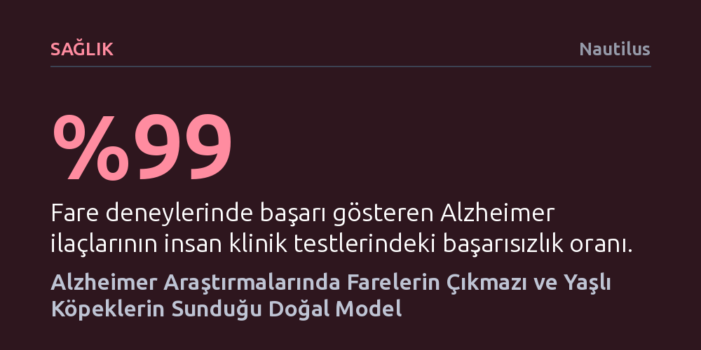

SAGLIK · Nautilus · 2026-10-11
Fare deneylerinde başarılı olan Alzheimer ilaçlarının yüzde 99'u insanlarda başarısız olurken, yaşlı köpek beyinlerinde insanlardakiyle aynı patolojik protein birikimleri saptandı. Doğal olarak demans geliştiren köpekler, hem erken teşhis hem de yeni tedaviler için farelerden çok daha gerçekçi bir model sunuyor.
Yıllardır fareler üzerinde yürütülüp başarısız olan Alzheimer araştırmalarının kısıtlarını gösterirken, evimizdeki yaşlı köpeklerin hastalığın erken teşhisi ve tedavisi için doğal bir anahtar sunduğunu ortaya koyuyor.

Alzheimer ve benzeri demans türlerinin araştırılmasındaki en büyük güçlük, hastalığın ilk klinik belirtiler ortaya çıkmadan yaklaşık yirmi yıl önce beyinde sessizce gelişmeye başlamasıdır. Hastalar belirgin hafıza sorunları veya yön kaybı yaşayıp kliniğe başvurduklarında, beyin dokusundaki hasar geri döndürülmesi son derece zor bir aşamaya ulaşmış olur. Bu erken teşhis zorluğu nedeniyle bilim insanları, yeni ilaçları ve olası tedavi yöntemlerini doğrudan insanlarda denemek yerine laboratuvar ortamında fareler üzerinde test etmeye yönelmektedir.
Ancak laboratuvar ortamında fareler üzerinde geliştirilen ilaçların insan biyolojisindeki karşılığı neredeyse tamamen hüsranla sonuçlanmaktadır. Laboratuvar testlerinde umut vadeden Alzheimer ilaçlarının yüzde 99'u, insan klinik deneylerinde başarısızlığa uğramaktadır. Bunun temel sebebi, farelerin doğal yaşam döngülerinde Alzheimer'a zemin hazırlayan biçimsiz protein birikimlerini üretmemesidir. Araştırmacılar fareleri genetik olarak değiştirerek insan beynindeki patolojiyi taklit etmeye çalışsalar da tek bir fare modelinde demansın bütün karmaşık yönlerini yansıtmak mümkün olmamaktadır.
Fare deneylerinin bu kronik çıkmazı, araştırmacıları insanlardaki demans sürecini laboratuvar müdahalesi olmaksızın, doğal olarak yaşayan başka canlı türlerini aramaya yöneltti. Bu arayışta en umut verici aday, insanlarla aynı yaşam alanını ve çevresel koşulları paylaşan evcil köpekler oldu. Veteriner nörolojisi uzmanları, 12 yaşın üzerindeki köpeklerin dörtte birinden fazlasında "köpek bilişsel bozukluk sendromu" adı verilen ve insanlardaki demansla çarpıcı benzerlikler gösteren bir tablonun geliştiğini biliyordu.
Colorado State Üniversitesi'nden nörotoksikolog Julie Moreno ve ekibi, npj Dementia dergisinde yayımlanan çalışmalarında yaşlı köpek beyinlerini hücresel düzeyde inceledi. Yaşam kalitesi belirgin şekilde düştüğü için ötenazi uygulanan ya da doğal yollarla hayatını kaybeden köpeklerin sahiplerinden alınan izinle bağışlanan beyin dokuları, insan örneklerinde uygulanan laboratuvar yöntemleriyle analiz edildi. İncelemeler sonucunda, köpek beyninde biriken anormal proteinlerin, insanlarda erken evre demansta hasar gören beyin bölgeleriyle birebir aynı noktalarda toplandığı kanıtlandı.
Beyin dokusundaki bu doğrudan benzerliğin ardından araştırmacılar, insan Alzheimer hastalarının kanında görülen belirteçlerin demanslı köpeklerde de aynı seyri izleyip izlemediğini araştırdı. Beyninde yüksek yoğunlukta anormal protein birikimi tespit edilen köpeklerin kan dolaşımında, GFAP (glial fibriler asidik protein) düzeylerinin olağandışı biçimde yüksek olduğu belirlendi.
GFAP, sağlıklı bireylerin kanında olağan şartlarda bulunmayan, yalnızca beyin hasarı veya nörodejenerasyon varlığında dolaşıma sızan bir proteindir. Köpeklerde bu proteinin saptanması, yalnızca evcil hayvanlardaki bilişsel gerilemenin erken teşhisine katkı sunmakla kalmıyor; aynı zamanda insanlarda demansın henüz gözle görülür belirti vermediği evrelerini takip edebilecek kritik bir biyobelirteç olarak öne çıkıyor.
Bu biyolojik benzerliklerin insan ve köpek sağlığı için somut tedavilere dönüşebilmesi, çok daha kapsamlı verilerin toplanmasını gerektiriyor. 50 binden fazla evcil köpeği uzun süreli takibe alan Köpek Yaşlanma Projesi (Dog Aging Project), tüm vücudun ve özellikle beynin yaşlanmasını belirleyen biyolojik, genetik ve çevresel dinamikleri anlamayı amaçlıyor. Proje kapsamında uygulanan bilişsel test bataryaları sayesinde, köpeklerde nörolojik semptomlar dışarı yansımadan önce davranışsal değişimler ölçülebiliyor ve bunlar beyindeki patolojik değişimlerle ilişkilendirilebiliyor.
Evcil köpekler insanlarla aynı evde yaşamakta, benzer çevresel etkenlere maruz kalmakta ve benzer günlük rutinleri paylaşmaktadır. Köpek beyninin yaşlanma dinamiklerini ve neden bazı bireylerde demans gelişirken bazılarının sağlıklı kaldığını çözmek, insanlarda hastalığı yirmi yıl öncesinden teşhis edebilecek yeni araçların ve farelerde elde edilemeyen etkili tedavilerin keşfedilmesini sağlayabilir.